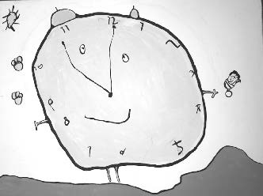

This is the seventh in a series of excerpts from an ongoing dialogue between Russell Lockhart and Paco Mitchell.
Russell: Last time, you brought up intuition as a focus. Another aspect to bring front and center is time. Our ordinary sense of time, our sense of linear time, the straight arrow of time, the flowing in one direction of time, the succession of events in time—all these concepts of time serve the intentionality of the ego, its purposes, plans and its sense of future. In relation to time in this sense we can measure “it” with high precision. We are on solid ground.
Notice, however, that intuition, dreams, imagination, serendipity, synchronicity, and art are “different” in relation to time. What is this difference? In a word: fluidity. In these exper-iences, time is more like the ocean. There is no singular direction; more like all directions. Two qualities stand out to me: a sense of “being carried” and a sense of “immersion”. Time loses its solidity.
When Alice moves through the mirror (that has become “like a bright silvery mist”) into looking-glass world, the mantel’s clock has the face of a little old man grinning at her. This announces that time is going to be different in looking glass world. And, when time is different, everything is going to be different. Everything is going to go all jabberwocky. Of course this is “nonsense” to the rational mind and so develops the habit of rejecting everything that does not “fit”, a high value of Alice’s sister.

But then how much more “nonsensical” is it to read the latest Scientific American on the topic entitled, “Does Time Exist?” Can’t you just see the Red Queen running rampant shouting, “There is no time, there is no time”. One thing we know about these fluid encounters with time in dreams and imagination and art is what Alice noticed when she read the poem Jabberwocky: “Somehow it seems to fill my head with ideas—only I don’t exactly know what they are!” It’s that not-knowing that is so hard. As we’ve noted several times in our dialogue it is staying with this Keatsian notknowing and letting it lead that is so hard for our modern consciousness to do. Instead of “making time” to follow the lead of not-knowing, we fill up time with information, which is then rapidly replaced by newer information— and there is an ocean of new information, a tsu-nami coming from every direction. Why is it that whatever is happening via the gadgets we are hooking our brains to is felt to be more crucial than what is happening in the jabberwocky world of our dreams, intuitions, imagination? Instead of “taking time” with these things (and the art and story that become their manifestation), our culture seems intent instead on “filling time” with what Joseph Gold calls “endless distraction”, this endless flow of information. This seems to me some form of entrainment, as if we are all in one way or another being gathered, herded, captured.
It takes time to be engaged with the “story” mind that underlies all “nonsense” (read fiction). It takes time to become dis-engaged from the seductive pull of “distractions”. Whether writing stories, reading stories, dreaming stories, being drawn into the stories of imagination, the stories that birth art, the stories that open up to us in serendipitous and synchronistic happenings, it takes time to dwell with these things and to nourish our mind with them, to become bathed in this sense of time.
I agree with Gold when he says that our brains and our health are being endangered by this process. The consequences are portentous and there seems precious little awareness of this.
Paco: Fascinating reflections, Russ. It’s true: We seem to be as little aware of time as fish must be of the water in which they swim. The uses and abuses of time to which we have become so dangerously habituated, affect everything we say, think, feel and do. We take it so much for granted that we can scarcely see the damage we are incurring and inflicting on ourselves and others.
Lewis Mumford points to the use of clocks in the ordering of daily chores and worship during the monastic period, citing this development as the earliest foundation of the industrial revolution, well before the power looms of the late 1700s. For many centuries we have been slicing up the otherwise unbroken fluidity of time— Henri Bergson’s durée or duration— until it becomes, along with the objectification of nature via science, a commodity to be used, exploited and priced. In contrast, Bergson emphasized the importance of intuition, of immediate experience, of the élan vital—all related, perhaps, to the fluidity you’re talking about. I imagine he would have been quite at home with your “ocean” of time.
I see the abuse of time as an abuse of the soul. How much of our modern alienation derives from this denial of the primordial experience of unbroken continuity? And similarly, how much of what has been called the tragedy of the commons, our trashing of the environment, derives from this same abuse? For, to a degree we may not expect, we treat nature as we treat ourselves.
When I recall the Bolivian riots ten years ago over who owns the rain— the people or the corporations—I am reminded of this question of time. If people can be dispossessed of the water that falls from the sky, can they also be dispossessed of time? Apparently so. But in the case of the water riots, there was a public outcry. Will we ever see time riots? I don’t know, but an active resistance would not be a bad idea. Who knows? We may hear a rally cry some day: “Throw off the shackles! Slow down! Take your time!”
As you say, we are being gathered, herded and captured, until most of us are time—stressed or time—deprived. It is as if time—once our common possession and treasure—is being stolen from us. But we can “steal back” time from our thieving culture, by various methods of time dilation. For example, your practice of stopping work long enough to spill coffee on drawing paper to see what results, or to examine books accidentally knocked off a library shelf, you are being dilatory with your allotted fragments of time, resisting those endlessly ticking seconds like some biblical Joshua calling for the sun to stand still.
And really, anyone who bothers to remember a dream, to write it down, to draw the dream, to carry it through the day, is participating in this “retro—fitting” of time, the re—conversion of le temps perdu into la durée. But I’d like to hear more about what you are calling the “story” mind. I suspect there’s a great deal implicit in that simple phrase.
RL: Articulating “story” mind begins with sleep. Sleep first appears in primitive life forms. From the level of worms on up the evolutionary scale, sleep becomes ever more definite and complex. While the basic questions concerning the “why” of sleep are not fully answered, we know that it is necessary for higher animals to “leave” the constant and demanding flow of “waking” experience—what we call the “real” world. Why do we need to leave the waking world? For one thing, it exhausts basic bodily processes—particularly those over which we have no control. Sleep restores these functions and is essential for health and well being. Sleep is also the “theater” in which animals dream. If human experience is any guide, a major feature of dreams is that they are stories in pictures. Not all dreams are pictures to be sure, but the visual mode is dominant. The similarity to “movies” is striking. But more than pictures. In dreams, whether bare fragments or full—fledged drama, all compelling aspects of narrative are present: characters (including versions of ourselves) undergoing conflict leading to actions and potential resolutions. This is what I call the story mind. We sleep not only for restoration of the body’s structures and functions; we sleep in order to dream, in order to experience and participate in story mind. Research now shows that dreaming is not just “ephemera”, not just “random images”, but shows just how necessary dreaming is to our health and well—being. But note how we must “leave” ordinary time and the flow of events in order to participate and be fully engaged in story mind. This time change is true whether we are dreaming, reading a novel, watching a film, or expressing images in art, writing, or other forms. [See interview with Pamela Hayes, this issue, in Dreams in the News.]
In contemporary life, in the pursuit of our waking life, we short change sleep and dreams. I’m convinced this is not only a losing exchange, but one that is disastrous for our overall health and well-being. The modern pressures of life and work are making us sick. If we take medications in order to sleep, almost all of these will deprive of us dreams, or the memory of dreams. If we try to escape our dreams by whatever means, even if they be nightmares, or by shouting claims that dreams are “nonsense”, we are deluding ourselves to our peril. And what is in common with the modern plague of work and ever increasing demands of ”being on-line” is that we lose contact with necessary narrative, with story mind. If we go into therapy, and our story mind gets translated via interpretation into “theory” mind, or the latest version of a consumer six-session “check list”, this amounts to reading critiques of Moby Dick, rather than Moby Dick; reading reviews of Inception, rather than seeing the film; talking about your dream, rather than painting the images that are chasing you or writing it out as a scene from your story mind. Being in contact with story mind takes time. Most everything our cultural engines are pulling us into, goes against this and “consumes” ever more precious time. This is why we are forced into “stealing” time if we are to gain any traction from the modern version of Metropolis that is gathering, herding, capturing us. The problem is not that we do not have enough time for the ever increasing demands of waking life. That is the great delusion. The problem is that we do not have enough time for sleep and for story mind.
PM: The Zen master calls the monks together and says, “There are many urgent tasks facing us, and little time. Therefore, we must slow down”. Like all good stories, that one deserves repeating, especially since it carries a profound truth. In the middle ages we used to say Omni festinatio parte diaboli est. All haste is of the devil. It was true then, it’s true now. How precarious must our psychic health be today when the symptomatic, timestarved condition even penetrates our sleep, in the form of “anxiety dreams” in which we rush to catch an airplane or take a test? The dreamer tries to sleep in order to enter the story mind, but instead ends up furiously striving to “measure up” to external standards. Metropolis, with its deranged ten-hour clock, is like the dream of modernity.
It’s intriguing to think of the story mind as beginning with sleep, and sleep extending all the way back to worms. The fact that our planet spins means that virtually every creature, from the very onset of life itself, has been conditioned by alternations of light and dark. No wonder we imagined gods of the night and gods of the day, especially sunrise. I can’t think of any life-form that lives in daylight twenty-four hours a day. These facts feed my suspicion that dreams—and not just sleep—in some mysterious way belong to the evolving biosphere. Everything you are saying about the story mind is all the more important today because we’ve become so unbalanced. And most of our narratives—from the most personal all the way up to the Grand Narrative of humanity—are suffering from the distortions and pre-emptions of marketing campaigns and political manipulations. So in addition to reserving time for the story mind, we also need ways to protect the story mind.
RL: Whatever protects dreaming, the art impulse, the imagination generally, will protect story mind. But the single most effective protection of story mind is the individual taking this up as a project. Humans are a social species and so herding is natural to our ways of functioning even if what we are being herded into may not be so good for us (not accidental that we spend time browsing, twittering, joining social networks, becoming fans). But protecting story mind is necessarily an individual thing, an individual project, like a writer writing a novel, a painter painting, a dreamer dreaming. Be wary of demands that these activities become “social”.
In thinking about your idea of the need for protecting story mind, I am reminded of Goethe. His work was essentially lost in the flood tide of the Newtonian socialization of science. Only when the quirky “individual” nature of quantum ideas came on the scene, did Goethe become “relevant” again. And I think his work, perhaps even more than Jung’s, certainly more than what Jung’s work has become in its “socialized” aspect, may become a crucial aspect of what you are calling the protection of story mind.
We can explore this further in the next dialogue, but let me mention just this. Goethe’s method requires one to slow down and take time and to engage in developing the fullness of the sensorial imagination. You cannot do this in an instant. You cannot computerize this. You can only engage your own individual mind as the way into this. Only the individual can protect story mind.